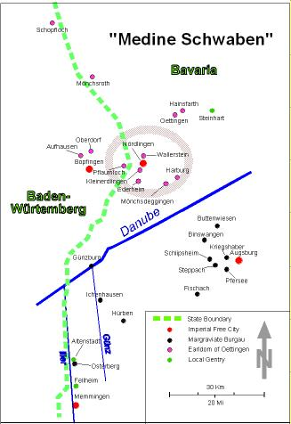

Jews in Bavarian Swabia
This database contains more than 28,000 19th-century civil records
for the Jewish inhabitants of Bavarian Swabia.
About the Region
The so-called "Medinat Schwaben" [Rohrbacher 1995]
forms a unique Jewish-German
cultural landscape which experienced its zenith in the first half of the
19th century.

The majority of Jewish communities belonged to one of two distinct political
entities: the margraviate of Burgau south of the Danube and the earldom of
Oettingen to its north. The political conflicts between the house
Hapsburg, the local gentry and the civic leadership in the case of Burgau
[Ullmann 1999] and the interconfessional strife between
the Catholic and Protestant branches of the Oettingens provided the Jewish
communities with enough "wiggle room" to ease their precarious
struggle for existence.
The Jewish communities formed part of villages within these political
entities which were comprised of Jews, Catholics and Protestants.
In some of those villages Jews occasionally even formed a numerical
majority. The Jewish communities maintained a tight network of
familial and cultural interconnections extending to communities in
adjacent regions, such as Wassertrüdingen in Unterfranken as well as
Laupheim and Buchau in Baden-Wuerttemberg. In view of its particular
history and geography "Medinat Schwaben" should be considered as
a unit by Jewish genealogists.
Sources of Data
We are in the fortunate situation that the
University of Augsburg, the
Bayerisches
Staatsarchiv in Augsburg and local historians, among them Rolf Hofmann,
Doris Pfister and Peter Fassl have taken a special interest in the
Jewish history of the region. As a consequence, we not only have
an exhaustive catalogue of available documents accessible on the internet,
but Rolf Hofmann has already transcribed most of the BMD (birth, marriage
& death) registers and grave lists in the Oettingen area.
The Pfister/Fassl
catalogue has pinpointed corresponding documents for the other regions
in Bavarian Swabia. Most of the BMD registers were collected by
the Nazi "Reichssippenamt"
for its criminal purposes.
The system of Jewish Civil Records in Southern Germany has its own
fascinating history
(click here).
This situation created a unique opportunity for Jewish genealogists
not only to develop an integrated genealogical database for a defined
Jewish population in Southern Germany in the early 19th century,
but to also expand our understanding of the historic, geographic,
cultural and economic circumstances which allowed this society to flourish.
Inventory of Records
As of today, the database contains the following number of records (and
facsimiles of the original records) for the communities and years listed.
| Community | Births | Marriages | Deaths |
Matrikel | Circumcisions |
|---|
| Altenstadt | 489 | 80 | 379 | 714 | - |
| Augsburg | 652 | 215 | 389 | 1,138 | - |
| Binswangen | 532 | - | - | 158 | - |
| Buttenwiesen | 413 | 106 | 435 | 1,245 | - |
| Ederheim | 216 | 39 | 139 | - | - |
| Fellheim | 465 | 84 | 378 | 734 | - |
| Fischach | 768 | 139 | 577 | 419 | - |
| Günzburg | - | - | - | - | - |
| Hainsfarth | 684 | 140 | 598 | - | - |
| Harburg | 620 | 122 | 606 | - | 131 |
| Hürben-Krumbach | 1,870 | 302 | 1,392 | - | 236 |
| Ichenhausen | 2,856 | 836 | 1,635 | 408 | - |
| Kleinerdlingen | 329 | 77 | 319 | 59 | - |
| Kriegshaber-Augsburg | 95 | 17 | 92 | - | - |
| Memmingen | - | - | - | - | - |
| Mönchsdeggingen | 522 | 95 | 349 | - | - |
| Nördlingen | - | - | - | - | - |
| Oettingen | 306 | 89 | 400 | - | - |
| Osterberg | 39 | 16 | 32 | - | - |
| Pfersee-Augsburg | 182 | 4 | 161 | - | - |
| Steinhart | 254 | 55 | 196 | 45 | - |
| Steppach | - | - | - | - | - |
| Wallerstein | 272 | 332 | 435 | 62 | - |
| Total: 28,173 | 11,564 | 2,748 | 8,512 | 4,982 | 367 |
- Altenstadt
- 489 birth records (with 831 record facsimiles), from 1835 to 1974.
- 80 marriage records (with 105 record facsimiles), from 1835 to 1882.
- 379 death records (with 650 record facsimiles), from 1835 to 1979.
- We don't have the Mohel book (yet).
- 714 matrikel records (with 714 record facsimiles), from 1750 to 1867.
- Augsburg
- 652 birth records (with 662 record facsimiles), from 1789 to 1881.
- 215 marriage records (with 215 record facsimiles), from 1836 to 1909.
- 389 death records (with 392 record facsimiles), from 1800 to 1880.
- We don't have the Mohel book (yet).
- 1,138 matrikel records (with 1,138 record facsimiles), from 1769 to 1879.
- Binswangen
- 532 birth records (with 532 record facsimiles), from 1809 to 1857.
- We don't have the marriage registry (yet).
- We don't have the death registry (yet).
- We don't have the Mohel book (yet).
- 158 matrikel records (with 158 record facsimiles), from 1737 to 1864.
- Buttenwiesen
- 413 birth records (with 413 record facsimiles), from 1831 to 1858.
- 106 marriage records (with 106 record facsimiles), from 1831 to 1865.
- 435 death records (with 435 record facsimiles), from 1817 to 1865.
- We don't have the Mohel book (yet).
- 1,245 matrikel records (with 1244 record facsimiles), from 1737 to 1873.
- Ederheim
- 216 birth records (with 216 record facsimiles), from 1810 to 1869.
- 39 marriage records (with 45 record facsimiles), from 1811 to 1869.
- 139 death records (with 146 record facsimiles), from 1810 to 1870.
- We don't have the Mohel book (yet).
- We don't have the matrikel book (yet).
- Fellheim
- 465 birth records (with 465 record facsimiles), from 1831 to 1889.
- 84 marriage records (with 84 record facsimiles), from 1830 to 1877.
- 378 death records (with 378 record facsimiles), from 1831 to 1882.
- We don't have the Mohel book (yet).
- 734 matrikel records (with 732 record facsimiles), from 0 to 1875.
- Fischach
- 768 birth records (with 1244 record facsimiles), from 1803 to 1938.
- 139 marriage records (with 281 record facsimiles), from 1826 to 1891.
- 577 death records (with 898 record facsimiles), from 1814 to 1940.
- We don't have the Mohel book (yet).
- 419 matrikel records (with 419 record facsimiles), from 1815 to 1938.
- Günzburg
- We don't have the birth registry (yet).
- We don't have the marriage registry (yet).
- We don't have the death registry (yet).
- We don't have the Mohel book (yet).
- We don't have the matrikel book (yet).
- Hainsfarth
- 684 birth records (with 2052 record facsimiles), from 1802 to 1924.
- 140 marriage records (with 420 record facsimiles), from 1826 to 1905.
- 598 death records, from 1825 to 1914.
- We don't have the Mohel book (yet).
- We don't have the matrikel book (yet).
- Harburg
- 620 birth records (with 1,860 record facsimiles), from 1804 to 1931.
- 122 marriage records (with 366 record facsimiles), from 1807 to 1925.
- 606 death records, from 1807 to 1938.
- 131 circumcision records (with 131 record facsimiles).
- We don't have the matrikel book (yet).
- Hürben-Krumbach
- 1,870 birth records (with 2,499 record facsimiles), from 1784 to 1925.
- 302 marriage records (with 395 record facsimiles), from 1785 to 1928.
- 1,392 death records (with 1,787 record facsimiles), from 1785 to 1940.
- 236 circumcision records.
- We don't have the matrikel book (yet).
- Ichenhausen
- 2,856 birth records (with 2,856 record facsimiles), from 1784 to 1934.
- 836 marriage records (with 836 record facsimiles), from 1824 to 1921.
- 1,635 death records (with 1,635 record facsimiles), from 1747 to 1939.
- We don't have the Mohel book (yet).
- 408 matrikel records, from to .
- Kleinerdlingen
- 329 birth records, from 1790 to 1881.
- 77 marriage records, from 1810 to 1898.
- 319 death records, from 1797 to 1902.
- We don't have the Mohel book (yet).
- 59 matrikel records.
- Kriegshaber-Augsburg
- 95 birth records (with 95 record facsimiles), from 1863 to 1876.
- 17 marriage records, from 1863 to 1874.
- 92 death records (with 92 record facsimiles), from 1860 to 1875.
- We don't have the Mohel book (yet).
- We don't have the matrikel book (yet).
- Memmingen
- We don't have the birth registry (yet).
- We don't have the marriage registry (yet).
- We don't have the death registry (yet).
- We don't have the Mohel book (yet).
- We don't have the matrikel book (yet).
- Mönchsdeggingen
- 522 birth records, from 1805 to 1875.
- 95 marriage records, from 1808 to 1871.
- 349 death records, from 1808 to 1875.
- We don't have the Mohel book (yet).
- We don't have the matrikel book (yet).
- Nördlingen
- We don't have the birth registry (yet).
- We don't have the marriage registry (yet).
- We don't have the death registry (yet).
- We don't have the Mohel book (yet).
- We don't have the matrikel book (yet).
- Oettingen
- 306 birth records, from 1850 to 1934.
- 89 marriage records, from 1850 to 1937.
- 400 death records, from 1850 to 1940.
- We don't have the Mohel book (yet).
- We don't have the matrikel book (yet).
- Osterberg
- 39 birth records (with 41 record facsimiles), from 1840 to 1851.
- 16 marriage records (with 16 record facsimiles), from 1841 to 1848.
- 32 death records (with 36 record facsimiles), from 1840 to 1851.
- We don't have the Mohel book (yet).
- We don't have the matrikel book (yet).
- Pfersee-Augsburg
- 182 birth records (with 207 record facsimiles), from 1819 to 1874.
- 4 marriage records, from 1863 to 1869.
- 161 death records (with 183 record facsimiles), from 1835 to 1875.
- We don't have the Mohel book (yet).
- We don't have the matrikel book (yet).
- Steppach
- We don't have the birth registry (yet).
- We don't have the marriage registry (yet).
- We don't have the death registry (yet).
- We don't have the Mohel book (yet).
- We don't have the matrikel book (yet).
- Wallerstein
- 272 birth records (with 1 record facsimile), from 1827 to 1875.
- 332 marriage records, from 1825 to 1881.
- 435 death records, from 1752 to 1883.
- We don't have the Mohel book (yet).
- 62 matrikel records, from to .
- Steinhart
- 254 birth records, from 1816 to 1875.
- 55 marriage records, from 1813 to 1876.
- 196 death records, from 1816 to 1900.
- We don't have the Mohel book (yet).
- 45 matrikel records.
Other Resources
Below you will find articles and books relevant to our research.
- Bell, Dean Phillip
- Jewish Identity in Early Modern Germany: Memory, Power and Community.
Ashgate Publishing, Ltd., Jan 1, 2007, ISBN: 978-0-7546-5897-9.
- Brodsky, Ada
- Nach Hause Vertrieben - Geschichte einer Kindheit in Hitler-Deutschland.
Oelbaum Verlag Augsburg 1999; ISBN 3-927217-41-7.
- Burmeister, Karl Heinz
- medinat bodase. Zur Geschichte der Juden am Bodensee 1450-1618;
Vol. 3, Konstanz 2001.
- Eberhardt Barbara, Hager Angela et al.
- Mehr als Steine... Synagogen Gedenkband Bayern, Vol. 1.
Kunstverlag Josef Fink; ISBN 978-3-98870-411-3.
- Ecker-Offenhäußer, Ute u. Theresia Hörmann
- Landjudentum im deutschen Südwesten während der Frühen
Neuzeit. Kießling, Rolf/ Ullmann, Sabine (Hgg.),
Berlin 1999 (Colloquia Augustana 10).
- Eva, Beling
- Die gesellschaftlische Eingliederung der deutschen Einwanderer
in Israel. (Eine soziologische Untersuchung der Einwanderung
aus Deutschland zwischen 1933 und 1945). Europaeische Verlagsanstalt
Frankfurt a/M, 1967; ASIN: B0000BQ0MQ.
- Fassl, Peter (Hg.)
- Geschichte und Kultur der Juden in SchwabenGeschichte und Kultur
der Juden in SchwabenGeschichte und Kultur der Juden in Schwaben.
Wiss. Tagung der Heimatpflege des Bezirks Schwaben in Zsarb. m.d.
Schwabenakademie Irsee am 14./15. Oktober 1989 in Irsee, Sigmaringen 1994
(Irseer Schriften 2).
- Fassl, Peter (Hg.)
- Geschichte und Kultur der Juden in Schwaben II.
Neuere Forschungen und Zeitzeugenberichte. Gerhard Willi (Ed.),
Stuttgart 2000 (Irseer Schriften 5).
- Immenkötter, Herbert
- Die israelitische Kultusgemeinde in Hainsfarth (Landkreis Donau'Ries)
im 19. und 20. Jahrhundert. Studien zur Geschichte des
Bayerischen Schwaben. ISBN: 3-89639-332-4.
- Jakob, Reinhard
- Die jüdische Gemeinde von Harburg (1671-1871).
Steinmeier, Nördlingen 1988; ISBN: 3923645899.
- Kolb, Stephan
- "……..aus der Stadt gewiesen"
Die Juden von Usingen. Gesellschaft fuer Christlich-Juedische
Zusammenarbeit Watterau, 1966; ISBN3-923840-02-0.
- Kuhn, Peter et al.
- Jüdischer Friedhof Georgensgmünd; Die Kunstdenkmäler
von Bayern. Deutscher Kunstverlag, München, Berlin 2006;
ISBN 3-422-06559-8.
- Richarz, Monika/ Rürup, Reinhard (Hgg.)
- Jüdisches Leben auf dem Lande. Studien zur deutsch-jüdischen
Geschichte. Schriftenreihe wissenschaftlicher Abhandlungen
des Leo Baeck Instituts 56; Tübingen 1997.
- Roemer, Gernot (Hrsg.)
- "Vier Schwestern" Lebenserinnerungen Von Elisabeth, Lotte,
Sophie und Gertrud Dann aus Augsburg.
Wissner-Verlag Augsburg, 1998. ISBN 3-89639-098-8.
- Rohrbacher, Stefan
- Ungleiche Partnerschaft. Simon Günzburg und die erste Ansiedlung
von Juden vor den Toren Augsburgs in der Frühen Neuzeit.
Kießling, Rolf/ Ullmann, Sabine (Hgg.), Berlin 1999
(Colloquia Augustana 10) p. 77-89.
- Rohrbacher, Stefan
- Medinat Schwaben. Jüdisches Leben in einer süddeutschen
Landschaft in der Frühneuzeit. Juden in Schwaben im Kontext
des Alten Reiches, hg. von Rolf Kiessling, Berlin 1995, pp. 80-109.
- Treml Manfred, Josef Kirmeier u. Wolf Weigand
- Geschichte und Kultur der Juden in Bayern, Bd. 1-2,
1: Aufsätze, 2: Lebensläufe. (Veröffentlichungen zur
Bayerischen Geschichte und Kultur 17/88-18/88);
München / New York / London / Paris 1988.
- Ullmann, Sabine
- Judengemeinden in Schwaben im Kontext des Alten Reiches.
Kießling, Rolf (Hg.), Berlin 1995 (Colloquia Augustana 2).
- Ullmann, Sabine
- Nachbarschaft und Konkurrenz; Juden und Christen in Dörfern
der Markgrafschaft Burgau 1650 - 1750. Vandenhoeck &
Ruprecht, Göttingen; 1999; ISBN 3-525-35466-5.
Acknowledgments
This database and, above all, its content, is the result of the enthusiasm,
skill, good eyesight and a lot of hard work and persistence of a group of
dedicated volunteers. They have invested hundreds, even thousands of
hours transcribing the copies of original 19th-century civil records we
received from the Bavarian State Archive in Augsburg. The records
were often almost illegible. But with patience and mutual support,
a reasonably accurate version was created.
The volunteers are: Ralph N. Baer, Esther Bloch, Naomi Bloch, Ralph Bloch,
Erwin Bosch, Rolf Hofmann, Stuart Hollander, Ernest Kallmann, David T. Lewis,
Pierre Malpart, Reuven Mohr, Marcelo Rosenbaum, Sonja Uhl, Rachel Unkefer,
Adam Yamey, and Werner Zimmt.
Disclaimer
This database (originally on the webiste JGBS.ORG) has been designed and
maintained by volunteers. It receives no external funding.
The records have been transcribed by volunteers, mostly amateurs.
As a consequence, there will likely be transcription errors.
We make every effort to correct such errors, as we become aware of them.
Furthermore, we focus on making the official civil records from the
18th and 19th century available on the internet. We do not claim
that they represent reality, simply that these were the official records
at the time. We can, therefore, accept no responsibility for
consequences that any erroneously transcribed records may cause.
We will correct any true transcription errors. If you find such errors,
simply send us an e-mail with details regarding an incorrect record
(including record number) and the reason you have for challenging the
validity of the data. However, if the properly transcribed records
conflict with your own private records, we can not change what is in
the database.
Searching the Database
This database is searchable via the
JewishGen Germany Database.
Last Update: 11 Oct 2019 WSB
{kind=link}